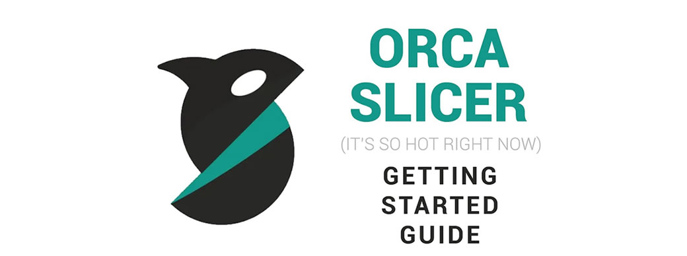
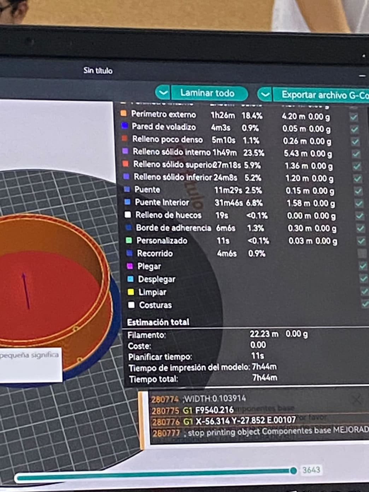
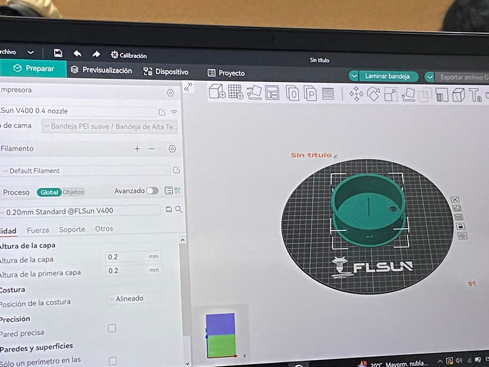

Virtual / Presencial
Analizamos cada pieza del proyecto, para poder tener una correcta impresión de cada piensa en el programa OrcaSlicer.
OrcaSlicer es un programa que ayuda a preparar los diseños de objetos para ser impresos en una impresora 3D. Es como un intermediario entre el diseño que tienes en la computadora y la impresora 3D que va a crear el objeto.
Ajustar Configuraciones: Luego, ajustas diferentes configuraciones, como la velocidad de impresión, la temperatura del extrusor, el grosor de las capas, y si quieres soportes para partes sobresalientes del diseño.
 